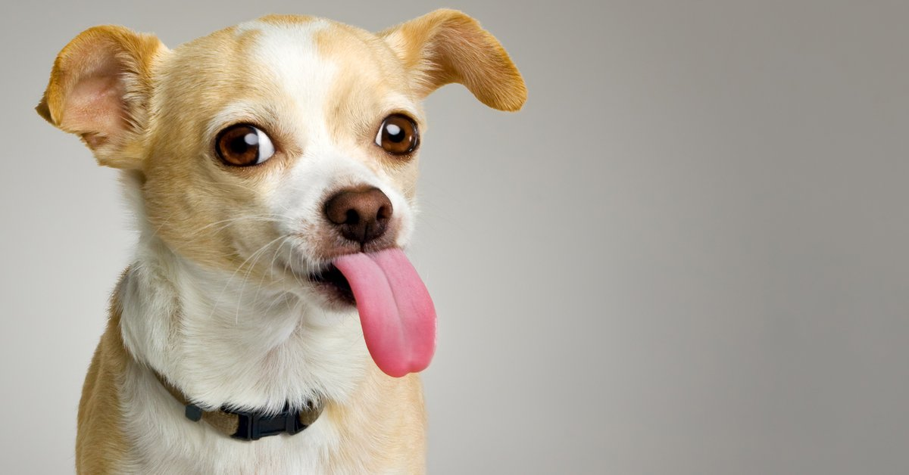
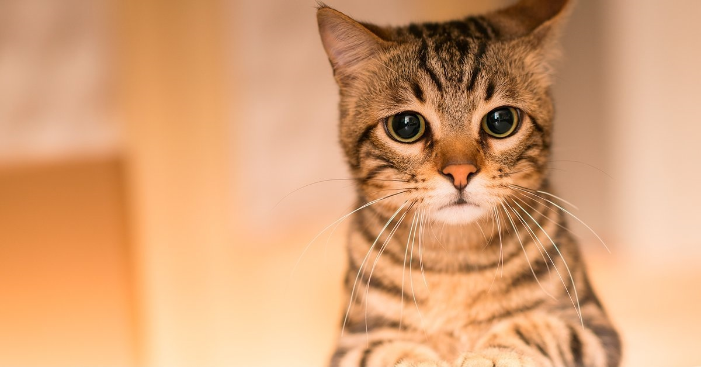
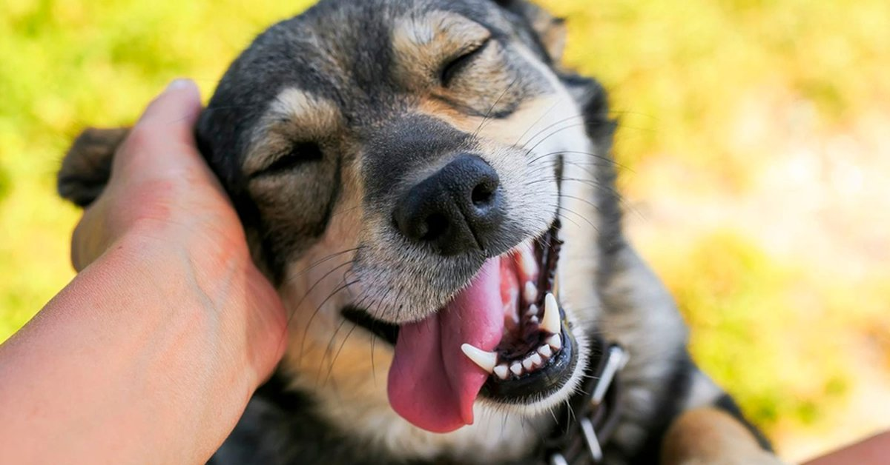

RUFFO
Cachorro de 3 meses, color beige. Le gusta jugar a buscar la pelota
SANDIA
Cachorra de 6 meses, muy mimosa y juguetona

ARENITA
Gatita de 2 meses, muy dulce y activa
LUNA
Perra adulta de 3 años, muy tranquila y compañera

ROCKY
Gato adulto de 4 años, adora jugar con cuerditas

PEPE
Perro adulto de 4 años, adora jugar con huesos